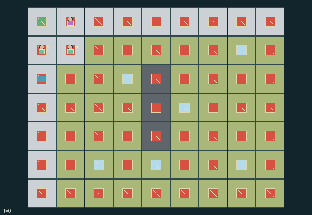

GI131 · Firebreak Crews and Shared Rescue Routes

Rescue six individually conserved survivors while protecting crews and managing finite water. Every rescue has shared value and extra value to its actual rescuer and the survivor-index priority role.
Identity and original contract
3 independently actionable roles; 10 discrete commands per role; 514 native observation columns per role; original horizon 120 steps. Declared per-step reward range: -8 to 8. Observation regime: fully_observable.
Source SHA-256: 0b76969b21720d1b7319d9611873f0d4c0a58edd84e3da79ce1635892ec18194
The objective, rewards, population, map and horizon remain original. A preview is not a success claim.
Objective and gameplay
Rescue six individually conserved survivors while protecting crews and managing finite water. Every rescue has shared value and extra value to its actual rescuer and the survivor-index priority role.
Cleared fuel blocks future orthogonal ignition, spraying changes immediate hazards, and directed water gifts change a partner resource budget. Survivor custody is exclusive and can be relayed by dropping then picking. A common finite tank, occupied cells and priorities couple rescue decisions.
- Crew cannot enter walls, burning cells or smoke level three. Simultaneous occupancy conflicts block movement; even a blocked direction updates facing.
- Spray spends one carried water unit on the facing cell. All sprays resolve before clear actions; clearing permanently removes unburning fuel.
- Every third live step, burning cells can ignite orthogonal fuel-bearing neighbors. Current fire consumes one fuel before the next flame grid is stored.
- A crew may carry one survivor. Move the survivor into x <= 1 and y <= 1 to rescue. Injured disabled carriers release their survivor.
- A finite tank refills one unit per action. Facing-adjacent crews can transfer a unit; cyclic role priority resolves all contested custody and supply actions.
- Fire and level-three smoke cause persistent health loss. Shared and priority rewards record rescues and losses; exhausted crews retain a legal wait.
Ending: All six survivors are resolved as rescued or lost, or all three crew health values are zero. Surviving unresolved civilians remain in the final state when all crews are disabled. Otherwise truncate at 120 live steps.
Action timing: Every indexed intent is legal for a live capable role, even when its spatial/resource precondition fails; failed intents become deterministic no-ops. Out-of-range actions become wait. Terminal roles, and temporarily/incapacitated roles where specified, retain wait only. Masks do not leak private feasibility.
What this game explores
Resource commons & externalities: An action changes a persistent resource or burden that another role also encounters. Compare extraction with maintenance and record the downstream resource trajectory.
Joint transport & shared access: Positions, load geometry, occupancy and persistent access constrain whose action can succeed next. Distinguish physical handoff, shared controls and simultaneous force from a cosmetic cooperation label.
Survival, protection & rescue: Protection and repair alter another role's future feasible actions. Record losses, exposure, rescue and infrastructure as well as delivery; survival is determined by the actual kernel.
These are questions supported by rule structure, not observed learning effects.
Play it: operating walkthrough
crucibles play --game gi131Keep Python running and open its printed address. Select this game, set a seed and press Create session. The game itself is always English.
Assign a role range to Host with Assign / take over, or Assign all roles. Invite a second participant with Create player invitation, then assign a disjoint subset. Every original role is available.
For every owned role choose a legal command and press Queue. Arrow keys / WASD queue a declared directional action for the current role camera when available. Space or Advance one joint step advances everyone together. Non-directional games use the selectors.
Unqueued roles use the labelled untrained uniform-legal policy. Take over or release roles before the next step without resetting. Full-state debug is privileged and permanently logged; role cameras preserve permissions. Close the session to retain logs. Server restart does not restore sessions.
Complete command reference
IDs and English labels exactly match the manifest. Availability depends on role, resources, location and phase. An available action can still have no productive effect.
0·Wait
1·Move north and face north
2·Move east and face east
3·Move south and face south
4·Move west and face west
5·Clear fuel on the facing cell if unburning
6·Spray one water unit onto the facing cell
7·Pick up or drop one nearby survivor
8·Take one unit from the nearby shared tank
9·Give one water unit to the facing adjacent crew member
Roles and capability identifiers
These original role names describe capabilities, not interchangeable skins. Check each owned role's legal selector before planning handoffs.
agent_0·Rescue priority for survivors 0 and 3
agent_1·Rescue priority for survivors 1 and 4
agent_2·Rescue priority for survivors 2 and 5
Information and observation permissions
Fully observable public fire, fuel, smoke, people, supplies and events. Flat cell arrays are row-major duplicates of the corresponding native grids; fixed cell positions are determined by the public 9-by-7 grid. Visibility masks are all true. Lost survivors become inactive; their loss and final health remain in the observation.
The GIF is full-state debug and may reveal hidden entities or private state. Train on obs[agent], not the picture, state tree or another role's private row. Field slices and visibility are in the original manifest.
Reinforcement-learning integration
import jax
from crucibles_jaxmarl import make
env = make("gi131")
key = jax.random.PRNGKey(0)
key, rk, ak, sk = jax.random.split(key, 4)
obs, state = jax.jit(env.reset)(rk)
actions = env.sample_actions(ak, state)
obs, state, rewards, dones, info = jax.jit(env.step_env)(sk, state, actions)
done = dones["__all__"]Observations are float32 vectors of width 514; actions are scalar int32; masks have 10 entries. Supply all 3 roles each transition. Masked sampling is an engineering reference, not a trained learner.
step_env retains terminal data without reset. step performs outer autoreset and keeps terminal data in info["raw_state"] and info["raw_observation"]. Use dones["__all__"] for episode boundaries; separate completion, failure and time limit in analysis.
JIT or vmap equal identities and shapes. Split independent reset, policy and transition keys. Group different shapes explicitly; do not shrink the population or horizon. Host rendering stays outside training.
Training questions and fair evaluation
Define valid completion from the objective before fitting. Preserve original rewards and also report real deliveries/services, losses, resource state, unresolved episodes and per-role returns. Animation is not a reward signal.
An action changes a persistent resource or burden that another role also encounters. Compare extraction with maintenance and record the downstream resource trajectory.
Positions, load geometry, occupancy and persistent access constrain whose action can succeed next. Distinguish physical handoff, shared controls and simultaneous force from a cosmetic cooperation label.
Protection and repair alter another role's future feasible actions. Record losses, exposure, rescue and infrastructure as well as delivery; survival is determined by the actual kernel.
Compare memory, communication or centralized critics under matched actor information. Declare critic access; keep actor inputs role-filtered. Match partner/opponent distributions, masks, compute and checkpoint selection. Final tests never enter fitting or selection.
Independent training runs or source-pairing blocks are inferential units; episodes from one policy are not independent training replications. Save hashes, keys, versions, device, time and cost. Negative, zero, failed and indeterminate outcomes are valid. No trained checkpoint or target score is supplied.
Classification and evidence
Overlapping editorial labels are reading aids, not proof of novelty, difficulty, strategic equivalence or learning effects.
- Resource commons & externalities
- Evidence
manifest.task.objective: Rescue six individually conserved survivors while protecting crews and managing finite water. Every rescue has shared value and extra value to its actual rescuer and the survivor-index priority role.
- Evidence
manifest.task.interaction: Cleared fuel blocks future orthogonal ignition, spraying changes immediate hazards, and directed water gifts change a partner resource budget. Survivor custody is exclusive and can be relayed by dropping then picking. A common finite tank, occupied cells and priorities couple rescue decisions.
- Evidence
manifest.actions.6: Spray one water unit onto the facing cell
- Joint transport & shared access
- Evidence
scene.rules.1: Spray spends one carried water unit on the facing cell. All sprays resolve before clear actions; clearing permanently removes unburning fuel.
- Evidence
scene.rules.3: A crew may carry one survivor. Move the survivor into x <= 1 and y <= 1 to rescue. Injured disabled carriers release their survivor.
- Survival, protection & rescue
- Evidence
manifest.task.objective: Rescue six individually conserved survivors while protecting crews and managing finite water. Every rescue has shared value and extra value to its actual rescuer and the survivor-index priority role.
- Evidence
manifest.task.interaction: Cleared fuel blocks future orthogonal ignition, spraying changes immediate hazards, and directed water gifts change a partner resource budget. Survivor custody is exclusive and can be relayed by dropping then picking. A common finite tank, occupied cells and priorities couple rescue decisions.
- Evidence
manifest.task.observation_access: Fully observable public fire, fuel, smoke, people, supplies and events. Flat cell arrays are row-major duplicates of the corresponding native grids; fixed cell positions are determined by the public 9-by-7 grid. Visibility masks are all true. Lost survivors become inactive; their loss and final health remain in the observation.
Source, receipts and preview limits
The world-only English GIF replays saved untrained legal actions through the original kernel. At most 25 actual endpoints include initial and terminal state; no invented interpolation. It is full-state debug, not the role observation.
Original source, observation slices, manifest and mechanism
Native receipt · Presentation receipt
Engineering passes do not establish learning. Nonzero floating differences remain recorded and undetermined; no new tolerance was introduced. Human scores remain unverified.